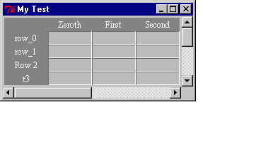
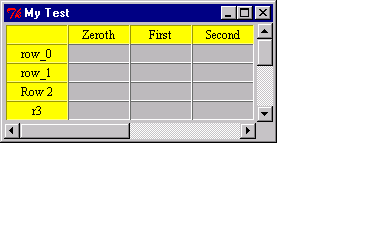
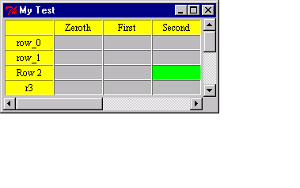
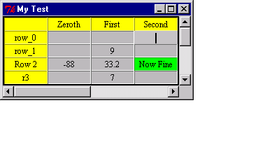
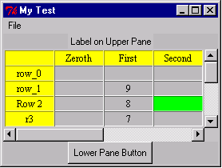

Tables Interface Demo
Interface between ALS Prolog and Tktable
The Tktable package is a powerful package
for creating and manipulating on-screen tables.
The file tables.pro defines a Prolog interface to the Tktable
package, providing
a natural set of Prolog predicates for dealing with Tk tables. The
interface is described in detail in Tables
Interface.
The file tables_demo.pro is a simple demonstration of some of
the basic table capabilities:
:- consult('tables.pro'). % ensure that tables.pro is loaded
use tk_alslib. % import these modules
use tcltk.
td(1)
:-
load_table_package, % load the tables dll (shared library)
create_table(demotable, % make a table with these headings:
[title='My Test',
rowheadings=[row_1,'Row 2',r3,r4,r5,r6,r7,r8,r9],
colheadings=['First','Second',third,fourth]
]).

td(2) :- % the tag "title" is automatically defined
table_set_tag(demotable, title,
[background=yellow, foreground=black, relief=groove]).

td(3) :- % configure a new tag z1
table_set_tag(demotable, z1,
[background=green, foreground=black]).
td(4) :- % apply tag z1
table_tag_region(demotable, z1, cell(2,2)).

td(5) :- % enter some values in a column
set_demotable_col(1,2,[9,8,7,6,5,4,3,2,1,2,3,4,5]).
td(6) :- % enter some values in a row
set_demotable_row(4,0,[-88,33.2,bad]).
 td(7) :- % read values from a cell
read_demotable_table(2,2,X),
printf('Value of cell %t,%t = %t\n', [2,2,X],[quoted(true)]).
?- td(7).
Value of cell 2,2 = bad
td(7) :- % read values from a cell
read_demotable_table(2,2,X),
printf('Value of cell %t,%t = %t\n', [2,2,X],[quoted(true)]).
?- td(7).
Value of cell 2,2 = bad
Next, click with the left mouse button in cell 2,2, and replace the contents
with something, for example:

Now reading from this cell we get:
?-td(7).
Value of cell 2,2 = 'Now Fine'
The extended demo
?-td(x1).
demonstrates the facilities for adding a menu bar to the window, together
with frames (containing widgets) above and below the table. If this is
run instead of td(1), all of the demo commands td(2),...will also
act on the extended example, as seen here:
